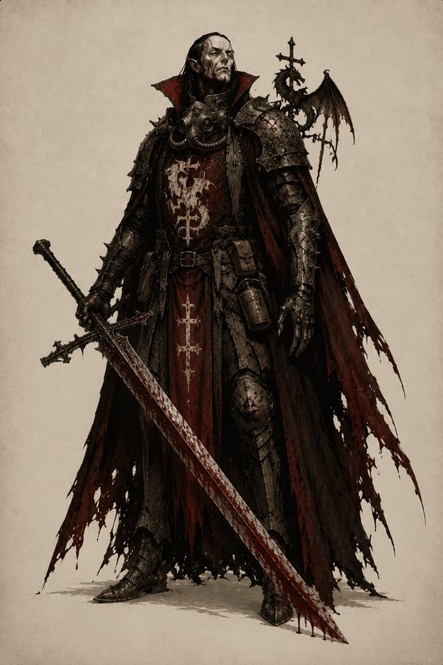
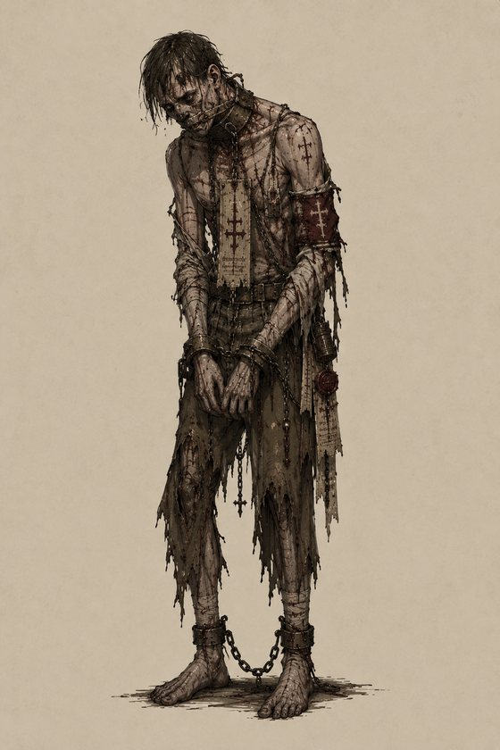

In the year 1573, when Byzantium had fallen and the Infernal advance crept north, the Sacred Order of the Dragon held the line in the hills of Wallachia. A million Heretics were impaled in those hills, and Heaven called it a miracle.
It was no miracle. It was a bargain. The knights of the Order had gone to the Scholomance — the Devil's school hidden beneath the Carpathian peaks — and struck a pact for power enough to hold. Immortality. Blood-sorcery. The strength to drink the war itself. They took the loan meaning never to repay it: to turn Hell's gift against Hell's own servants, and keep the borrowed eternity for themselves.
Heaven named them apostates and shut its gates. Hell, whose every law is written in contracts and collateral, named them thieves — for in the theology of the Pit there is no sin worse than welshing on a debt. So the Court belongs to neither power. They are hunted by the angels they betrayed and the devils they cheated, and they answer to no master at all.
They answer only to the blood. For the power the Order stole was never truly theirs — they drank it, long ago, from three things older and hungrier that still sleep in the crypts beneath Castle Dracula. The Voivode rules the Court, deadliest of all his kind; yet even he is a child beside the Elders below, from whose veins his own gift first came.
They are slow. They are few. And the longer the killing lasts, the stronger they become.
Special Rules
These rules apply to every Court of the Dragon Warband.
Sated Markers
The Court's power is measured in Sated Markers — blood harvested from others — kept entirely separate from Blood Markers.
Blood Markers on a Court model function as normal: your opponent may spend them against your rolls. They are a weakness.
Sated Markers are the Court's strength, fuelling its states and abilities.
A model can hold a maximum of 6 Sated Markers (raised to 8 by certain Bloodline gifts). Track them with a distinct counter.
The Feed ACTION
A model with the FEED keyword may take a Feed ACTION: choose an enemy or friendly model within 1" that has no Blessing Markers and does not have the ARTIFICIAL keyword, then take a Risky Success Roll. On a Success, place 1 Blood Marker on that model and the feeding model gains 1 Sated Marker. (As a Risky action, a failure ends the model's Activation — so Feed is usually taken last.)
The Sanctified
A model that has 1 or more Blessing Markers cannot be the target of a Feed ACTION.
The State Ladder
Every VAMPIRE model checks its Sated total to determine its state. The marker count is the state — there is no duration. Spending Sated on an ability may drop a model below a threshold and out of its state.
State
Sated Held
Base
0–2
Ascended
3–4
Blood-Crazed
5–6
Blood-Crazed Behaviour
Must take a Charge ACTION against the nearest eligible model if able (see The Leash).
May take no ACTION other than Move, Dash, Charge, or Fight.
It may still hold and score objectives, like any other model.
The Leash (DOMINION)
Each time a friendly Blood-Crazed model is Activated, check for a friendly DOMINION model within 8":
In range: it must charge the nearest enemy model.
Not in range: it must charge the nearest model, friend or foe.
If no friendly DOMINION model remains on the battlefield, all the Warband's Blood-Crazed models are permanently loose for the rest of the game.
Undead Fortitude
Vampire models carry the REGENERATE keyword (value varies by model). The Warband's herd — Bled and Strix — do not.
The Betrayed Church
Any attack made against a Court of the Dragon model by a model carrying 1 or more Blessing Markers gains +1 INJURY DICE.
New Keywords
VAMPIRE(Tag): one of the undead blood-drinkers of the Court. The Bled and the Strix are not VAMPIRE — they are the herd.
FEED(Tag/Effect): this model can take the Feed ACTION.
DOMINION(Tag): friendly Blood-Crazed models within 8" of this model are leashed.
The Bloodlines
The Court's power flows from three Elders sleeping in the crypts beneath Castle Dracula — the things the Voivode himself first drank from.
Pledge: When a Warband is created, it pledges to one Elder. That bloodline's gifts are available to the Warband's ELITE vampires; the other two are closed. Gifts are received in two ways — Elder Blood, purchased with ducats at creation (a vampire may take up to 3); and Bloodline Skills, earned through campaign advancement in place of standard Skill rolls. The final Skill (★) is the most potent.
Mara, the Red FaminePredator — the hunt & the feast
The eldest and hungriest — a feral, starving thing that is all appetite, who taught the Court to feast.
Elder Blood
Glutton for Blood (25) — its Feed ACTION grants 2 Sated instead of 1.
Gorge (20) — once per game, immediately gain 3 Sated.
Children of the Night (20) — once per game, place 1–2 free Strix within 6".
Skills
1 · Bloodscent — may Feed on a target within 2".
2 · Lunging Bite — +1 DICE to Melee Attacks on any turn it Charged.
3 · Sate the Kill — taking a model Out of Action in melee grants 1 Sated, no action required.
4 · Shared Feast — whenever it Feeds, one friendly vampire within 6" also gains 1 Sated.
5 · Savage the Wounded — +1 INJURY DICE against any model carrying 1+ Blood Marker.
★ The Red Famine — Sated cap rises to 8. While at 7+ Sated, Melee Attacks gain +1 DICE and +1 INJURY DICE, but it must take a model Out of Action each Turn or shed 1 Sated.
Negru Vodă, the Throne of ThornsSovereign — command & dread
The Black Voivode who ruled these mountains before Dracula was born; his blood is rulership, and the thorns are the stakes.
Elder Blood
Hypnotic Gaze (30) — once per game, seize any enemy model for one activation (move + one attack), then leave it Down.
Crown of Dread (25) — −1 DICE to all Success Rolls for enemy models within 6". With its FEAR, melee attacks against it suffer −2 in total.
Ancient Will (20) — the enemy may spend at most 1 Blood Marker to add −1 DICE against this model on any given roll.
Skills
1 · Voice of the Voivode — while on the battlefield and not Down/Out of Action, add +1 DICE to your Warband's Morale Check, and ignore the Shaken rule that turns all Success Rolls Risky.
2 · Greater Dread — enemy models within 3" must treat all their Success Rolls as Risky Success Rolls.
3 · Seat of Command — gains the DOMINION keyword.
4 · Withering Gaze — once per Activation, an enemy within 8" takes −1 DICE to its next Success Roll.
5 · Throne of Thorns — enemies treat the area within 6" of this model as Difficult terrain.
★ The Black Throne — gains DOMINION with unlimited Leash range; enemy models within 12" that take a Charge ACTION must charge this model if able.
Cazimir, the Hundred-GravedDeathless — the grave that won't keep
Buried a hundred times and risen from every grave; his blood is the curse that will not let go.
Elder Blood
Truly Deathless (30) — the first time it would be taken Out of Action, it dissolves to mist and reforms at a board edge at the start of your next Turn with 2 Sated.
Form of Mist (25) — gains FLYING, may move through models and terrain, and ranged attacks targeting it take −1 DICE.
Skills
1 · Knit the Wound — its REGENERATE value rises by 1.
2 · Rise from the Mire — the first time it is taken Down each game, it immediately stands and may move 3".
3 · Unquiet Body — gains TOUGH; if it already has TOUGH, it may use it twice per game.
4 · Grave-Chill — the first Blood Marker placed on it each Turn is removed immediately.
5 · Withered Revenant — while at 0 Sated it does not weaken; instead the next model it takes Out of Action restores 2 Sated.
★ The Hundred Graves — each time it is taken Out of Action, roll a D6; on 4+ it reforms at a board edge next Turn with 1 Sated. FIRE or BLESSED attacks deny the roll.
Armoury
Items marked ❖ are unique to the Court; their rules follow the tables. The Court may not take FIRE weapons.
Ranged — Firearms
Weapon
Notes
Cost
Pistol
6
Musket
5
Arquebus
8
Blunderbuss (Shield Combo)
5
❖ Sanguine Arquebus
12
❖ Vein-Seeker Rifle
ELITE only · Limit 3
25
Machine Gun
Limit 1
50
Grenade Launcher / Trench Mortar
Limit 1
40
Melee
Weapon
Notes
Cost
Trench Knife
1
Trench Club
3
Sword / Axe
4
Polearm (Shield Combo)
7
Great Hammer / Maul
10
Great Sword / Axe
12
❖ Blood-Blade
12
❖ Impaler's Stake
Limit 3
15
❖ Sanguine Reaver
Voivode only · Limit 1
40
Shields · Armour · Equipment
Item
Notes
Cost
Trench Shield (Shield Combo)
10
Standard Armour
15
Reinforced Armour
ELITE only
40
Combat Helmet
5
Gas Mask
5
❖ Coffin of Grave-Soil
15
❖ Vial of Stolen Blood
Consumable
10
Troop Flag
1
Court Battlekit ❖
Sanguine Arquebus · 2-Handed · 18" · CUMBERSOME — Bleeding Shot: place 1 additional Blood Marker on any model wounded by this weapon.
Vein-Seeker Rifle · 2-Handed · 30" · HEAVY — Hungry Rounds: place 1 extra Blood Marker on a wounded target, and a friendly vampire within 6" of that target may immediately take a Feed ACTION against it as if in contact.
Blood-Blade · 1-Handed Melee — Thirst: the first time this weapon wounds a model each Activation, the wielder gains 1 Sated.
Impaler's Stake · 2-Handed Melee · BLOCK — The Impaling: when this weapon takes an enemy model Out of Action, you may place a permanent Impaled Marker where it stood, then this weapon is lost for the rest of the game. The area within 3" of an Impaled Marker is Difficult terrain for non–DRAGON COURT models. Court models move freely.
Sanguine Reaver · 2-Handed Melee · DEADLY — The Reaver Drinks Deep: each time this weapon takes a model Out of Action, the wielder gains 2 Sated; while the wielder is Ascended, its Melee Attacks gain +1 INJURY DICE.
Coffin of Grave-Soil · Equipment — Buried Advance: instead of deploying normally, this model is held in reserve and enters from any friendly board edge at the start of any of your first two Turns.
Vial of Stolen Blood · Equipment · Consumable — once per game, from your second Turn onward, a vampire that drinks it gains 1 Sated.
Elite Warband Entries
0–1The Voivode160

The first knight of the Order to drink, and the last to repent. Lesser things do not disobey when he is near.
Movement
Ranged
Melee
Armour
Base
7"/Infantry
+1 DICE
+3 DICE
0
32mm
Battlekit
Any from the Armoury. May take a Pistol.
Abilities
Master of the Hunger — the Voivode can never become Blood-Crazed, regardless of his Sated count.
Ascended (3+ Sated) — his Melee Attacks gain +1 INJURY DICE, his Movement becomes 10", and his personal Leash radius extends to 12".
Crimson Surge (1 Sated) — make one additional Fight ACTION.
Knit the Flesh (1 Sated) — remove 2 Blood Markers from himself or a friendly vampire within 6".
Crack the Whip (1 Sated) — choose a friendly Blood-Crazed model within 12" and pick its charge target this Activation.
She rules by knowing whose veins answer when she calls.
Movement
Ranged
Melee
Armour
Base
6"/Infantry
—
+0 DICE
0
32mm
Battlekit
Any from the Armoury.
Abilities
Blood Sorcery — to cast a spell she pays its Blood Marker cost from any models on the battlefield (friend or foe). She may Overcharge by additionally spending her own Sated, as noted per spell. Each time she casts, she gains 1 Sated.
Ascended (3–4 Sated) — her spell ranges increase by 6", and each spell's Blood Marker cost is reduced by 1 (minimum 1).
Blood-Crazed (5–6 Sated) — The Red Hour. She cannot cast spells, loses DOMINION, and is compelled to charge as any Blood-Crazed model. At the end of her Activation, every model within 6" — friend or foe — suffers an Injury Roll; then remove 1 Sated from her.
Boiling Veins (pay 2 Blood Markers) — an enemy within 12" suffers an Injury Roll with +1 INJURY DICE. Overcharge: each Sated spent adds +1 INJURY DICE; if 3+ are spent, place 1 Blood Marker on the Witch.
Rise, Bleed Again (pay 1 Blood Marker) — a friendly vampire within 6" stands up if Down, and you remove up to 2 Blood Markers from it. Overcharge: spend 1 Sated to also grant it 1 Sated.
Drive the Hunt (pay 2 Blood Markers) — a friendly Blood-Crazed model within a friendly DOMINION model's Leash immediately makes a Charge ACTION and Fights; the Witch chooses its target. Overcharge: spend 1 Sated — if that Fight takes a model Out of Action, it makes one more Charge and Fight.
A higher vampire who hunts alone — heard before she is seen, and rarely seen at all.
Movement
Ranged
Melee
Armour
Base
7"/Infantry
+2 DICE
+2 DICE
0
32mm
Battlekit
Any from the Armoury.
Abilities
Deathshriek (innate Ranged Weapon · 16" · BLAST 2") — after resolving the attack, place 1 Blood Marker on each model in the blast.
Stalker's Veil — −1 DICE to Ranged Attacks that target the Moroi.
Vanish (Hide ACTION) — while in contact with terrain at least ½" high, take a Risky Success Roll, +1 DICE. On a Success, enemy models cannot choose the Moroi as the target of a Ranged Attack or Charge until she moves, charges, retreats, attacks, or an enemy moves within 1.5". She can still be hit within a BLAST.
Ascended (3–4 Sated) — Deathshriek increases to BLAST 3", and she may take the Hide ACTION even when not in contact with terrain.
Blood-Crazed (5–6 Sated). Blood-Crazed behaviour applies; she loses Deathshriek and Vanish, and her Melee Attacks gain +1 INJURY DICE.
She has never lifted a blade. She does not need to — the enemy will do it for her.
Movement
Ranged
Melee
Armour
Base
6"/Infantry
—
−1 DICE
0
32mm
Battlekit
Any from the Armoury.
Abilities
Allure — enemy models must treat all attacks against the Iele as Risky Success Rolls while within 6" of her.
Beguile (ACTION) — take a Risky Success Roll, +1 DICE. On a Success, choose an enemy within 12" and move it up to 6" directly toward the Iele. It may be moved within 1" of friendly models (not counting as charging), off objectives, or out of cover.
Thrall (ACTION) — take a Risky Success Roll, +1 DICE. On a Success, choose an enemy within 12" in Line of Sight; it immediately makes a stripped activation under your control — either Move + one Ranged Attack, or Charge + one Melee Attack — and nothing else.
Ascended (3–4 Sated) — Beguile and Thrall may target enemies within 18", and Allure extends to 9".
Blood-Crazed (5–6 Sated) — The Maddening Dance. Blood-Crazed behaviour applies; she loses Beguile and Thrall. At the end of her Activation, every other model within 12" — friend and foe — is moved up to 4" directly toward the Iele.
Anchor (Deathless) (+25) — heaviest armour and a shield. Ascended adds TOUGH, and REGENERATE rises to (2).
Butcher (+40) — Ascended: its melee weapon gains CLEAVE 2 and its Melee Attacks gain +1 DICE.
Feeder (+20) — Ascended: when it takes an enemy Out of Action with a Melee Attack, a friendly vampire within 6" gains 1 Sated.
Hunt (the Huntsman) (+30) — Ranged becomes +2 DICE. Ascended: its Ranged Attacks gain IGNORE LONG RANGE and its Ranged Weapons count as having ASSAULT, regardless of weapon carried.
Knight-Captain (+20, any Order) — gains the DOMINION keyword.
Not sent, but released; it does not stop while anything nearby still moves.
Movement
Ranged
Melee
Armour
Base
8"/Infantry
—
+2 DICE
0
32mm
Battlekit
A Blood-Blade.
Abilities
Loosed — always treated as Blood-Crazed. Deploys far from any friendly DOMINION model.
From the Dark — instead of deploying normally, it may be held in reserve and enter from any board edge at the start of any of your Turns.
Rampage — each time it takes a model Out of Action with a Melee Attack, it must immediately make a Charge ACTION against the nearest model and Fight again — friend or foe. While within a friendly DOMINION model's Leash range, it instead charges the nearest enemy. This continues while kills follow; it ends when a Fight fails to take a model Out of Action.
Born Crazed — deploys with 3 Sated (cap 6) and is always treated as Blood-Crazed.
Bloodburn — at the end of each of its Activations, remove 1 Sated.
Glutton — whenever a model is taken Out of Action within 6" (friend or foe), gain 1 Sated.
Bloodletting — a friendly vampire taking a Feed ACTION within 3" may instead take 1 Sated directly from the Leech.
Gorged (2+ Sated) — has FEAR, TOUGH, REGENERATE (2), and Transfixing Dread: enemy models within 6" treat each 1" of any move away from the Leech as 2".
Starving (0–1 Sated) — loses FEAR, Transfixing Dread, and TOUGH; REGENERATE drops to 0.
A leather-winged thing loosed at the enemy's rear.
Movement
Ranged
Melee
Armour
Base
10"/Flying
—
+0 DICE
0
32mm
Abilities
Erratic Flight — −1 DICE to Ranged Attacks that target a Strix.
Keywords
FLYING, DRAGON COURT
The Bled10

Walking blood-flasks the Court drives to war.
Movement
Ranged
Melee
Armour
Base
6"/Infantry
—
−1 DICE
0
25mm
Abilities
Cattle — when a Bled is taken Out of Action by an enemy, a friendly vampire within 3" immediately gains 1 Sated.
Offer the Vein — a friendly vampire within 1" of a Bled may take a Feed ACTION on it and make an Injury Roll against the Bled. The vampire gains its Sated as normal; the Bled suffers the injury and may be taken Out of Action.
Keywords
DRAGON COURT
Warband Creation
A starting Warband has 700 ducats ().
It must include exactly one Voivode, who is its Leader.
It may include no more than 6 models with the ELITE keyword (Voivode, Strigoi Witch, Moroi, Iele, Boyars).
It must pledge to one Elder Bloodline — Mara, Negru Vodă, or Cazimir.
All other limits follow the standard rules of Trench Crusade.
Damned by Heaven · Hounded by Hell · Sworn to the Blood